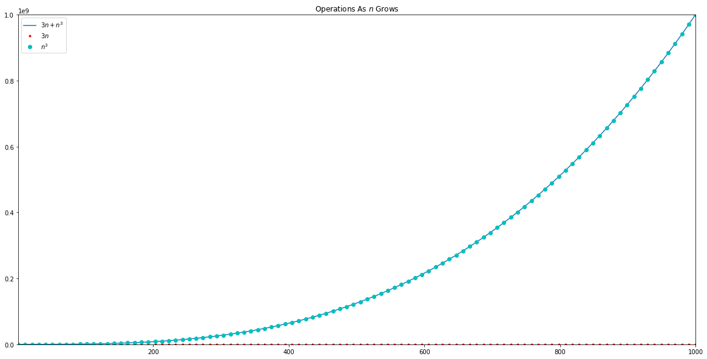

Learning Algorithms Through Programming and Puzzle Solving Notes
These are my notes from the book Learning Algorithms Through Programming and Puzzle Solving, available for purchase from leanpub.com.
Algorithms and Complexity
What is an algorithm?
- A sequence of instructions to solve a well formulated problem.
- Problems are specified in terms of their inputs and outputs and the algorithm has to transform the inputs into the outputs.
- An unambiguous specification of how to solve a class of problems (wikipedia).
What is a well-formulated problem?
- unambiguous
- precise
- No room for misinterpretation
What are two of the most important things to ask about an algorithm?
- Does it work correctly?
- How long does it take?
What is Pseudocode?
- A language that ignores specifics needed for a programming language but is precise enough to describe an algorithm.
- An informal, high-level description of an algorithm (wikipedia)
What is the difference between a Problem and a Problem Instance?
- A problem is a class of computational tasks
- A problem instance is a particular input for a problem class
Example: The Change Problem
The example given in the book is making change for someone. You want to be able to break a larger denomination (say a dollar) into smaller ones using the fewest number of coins. In this case they specifically say coin but you could re-state it to mean any type of money.
\[ \textbf{Input:}\text{ An integer }money\text{ and an array of }d\text{ denominations } c = c_1, c_2, \ldots, c_n,\text{ in decreasing order of value }(c_1 > c_2 > \ldots >c_n). \]
\[ \textbf{Output:}\text{ A list of}d\text{ integers } i_1, i_2,\ldots,i_d\text{ such that }c_1 i_1 + c_2 i_2 + \ldots + c_d i_d = money,\text{ and } i_1 + i_2 + \ldots + i_d\text{ is as small as possible.} \]
This is the way most people do it.
def MakeChange(money, c, d):
while money > 0:
coin <- "coin with largest denomination not greater than value of money."
"Give coin to customer"
money <- money - coin
What was c and d for? In the example solution they aren't used (and they also don't output the number of each coin as was required in the problem statement), but there is an alternative solution that always goes through the denominations once.
def MakeChange(money, c, d):
"""Make change using the smallest number of coins
Inputs:
- money: the original amount that you want to break up
- c: an array of coin denominations
- d: The number of denominations in c
Outputs:
list of counts for each coin denomination
"""
for k in {1..d}:
i_k <- floor(money/c_k)
money = money - i_k * c_k
return (i_1,..., i_d)
You could probably improve on the second version by quitting once you have made the change (i.e. money is 0).
What are correct and incorrect algorithms?
- Correct: every input instance produces a correct output
- Incorrect: At least one input produces an incorrect output
By this definition the MakeChange algorithm might be incorrect depending on the denominations of the coins. Suppose you had denominations of 25, 15, 11, 5, and 1 and you owed someone 46 cents, the algorithm would produce \(1 \times 25, 1 \times 15, 1 \times 5\), and \(1 \times 1\). But if you skipped the largest coin you could use \(2 \times 15, 1 \times 11\) and get the same change with three coins instead of four.
What are fast and slow algorithms?
Because different computers can perform at different speeds, time is a poor measure of algorithmic speed. Instead we use the count of basic operations that an algorithm uses.
What is Big-O Notation?
As the number of inputs goes up, the fastest growing term in the equation describing the number of operations an algorithm makes begins to dominate the count, so generally only this term is used to characterize the running time of the algorithm. Lets say you have two for loops and, given an input of \(n\), they have a run-time of \(3n + n^3\). When \(n\) is 1, the first term is 3 and the second term is 1, but when \(n\) is \(1,000\), the first term is \(3,000\) while the second term is \(1,000,000,000\).

As you can see, the \(n^3\) term grows much faster, accounting for just about all of the number of operations as \(n\) grows (to make the \(3n\) line visible at all I had to set the axis to a negative number). Although the So when using Big-O Notation we would say that it has a run time of \(O(n^3)\). Note that we generally don't put in any constant multipliers, so if the second term had been \(2n^3\), it would still be \(O(n^3)\).
Algorithm Design Techniques
Many algorithms share the same ideas even though the problems are different. These are the most common design techniques. The ideas are illustrated with the problem of trying to answer your phone when you've it handset somewhere in your house.
What are Exhaustive Search Algorithms?
This is a brute force approach where you look at every possible alternative in order to find your solution. To find your phone headset with brute-force you would simply sweep your entire house until you found it.
What are Brand-and-Bound Algorithms?
Branch-and-Bound algorithms use a brute-force approach but eliminate certain alternatives without checking them based on some criteria that would make them ineligible. If you were searching your house and you heard the phone ring upstairs then you could eliminate the bottom floor of the house because you know it isn't ther.
What are Greedy Algorithms?
Greedy Algorithms choose among alternatives at each iteration, always choosing the "best" alternative each time. To find your phone with in a greedy manner you would just walk in a straight line toward your phone. The downside to this approach is that if the only open door happens to be off the straight path, you will get stuck.
What are Dynamic Programming Algorithms?
Dynamic Programming breaks the larger problems into sub-problems and solves each of them to solve the larger problem. It organizes computations to try and avoid re-computing sub-problems if they happen to have already been solved by another sub-problem. There isn't a good way to apply this to the phone-search problem. Generally the method involves building a lookup table of incremental problem solutions.
What are Recursive Algorithms?
An algorithm is recursive if it calls itself.
Tower of Hanoi
The Tower of Hanoi Problem is an example of a recursively solved problem. You have three pegs with disks of different sizes on the leftmost peg and you need to move them to the rightmost peg, but a larger disk can never be place on a smaller disk. If you have one disk you just move it to the rightmost peg.
-
Three disks
- Move the smallest disk to the rightmost peg
- Move the middle disk to the middle peg
- Move the smallest disk to the middle peg
- Move the largest disk to the rightmost peg
- Move the smallest disk to the leftmost peg
- Move the middle disk to the rightmost peg
- Move the smallest disk to the rightmost peg
In general, the problem for n-disks is to move all but the largest disk to the middle peg, then move the largest disk to the rightmost peg, then do this for the remaining disks, and repeat until you only have one disk. So you are always solving the n disk problem by first solving the n-1 disk problem.
What are Divide-and-Conquer Algorithms?
Divide-and-Conquer algorithms work by splitting problems into smaller, easier to solve problems, solving the sub-problems separately, then combining them for the final solution. MergeSort is one example of a divide-and-conquer algorithm. Repeatedly split a list in half until you have single elements, then repeatedly merge them back together in pairs, making sure that the pairs are sorted.
What are Randomized Algorithms?
In randomized algorithms, you generate random solutions and check them. For the phone problem, you could use a coin toss to decide where to look next.
- Las Vegas algorithms: always return correct solutions
- Monte Carlo algorithms: Usually produce approximate (and therefore incorrect) solutions
Randomized algorithms are usually faster and simpler.
Programming Challenges
To solve a programming challenge:
- Read the problem statement
- Design the algorithm
- Implement the algorithm
- Test and debug your implementation
- Submit your solution
How do you solve a Programming Challenge?
- Read the problem statement
- Design the Algorithm
- Calculate if your solution will work based on your big-O and the constraints of the problem.
- Implement the algorithm
- Test and Debug your implementation
- Start with a small dataset to check that it works correctly
- Move on to a larger dataset to make sure it's correct and runs within the time constraint
- Implement a separate function to generate the larger dataset
- Check the boundary inputs (the largest and smallest that you will get)
- Check randomly generated data
- Check degenerate cases (empty sets, trees with one path, etc.)
- Stress Test
What are some good programming practices?
- Stick to a specific code style.
- Use meaningful variable names
- Turn on all warnings
- Structure the code
- Only make your code compact if it doesn't reduce readability
- Use Assert statements
- Preconditions
- Postconditions
- Points that should never be reached (put
assert False)
- Avoid integer overflow (estimate your maximum size and don't exceed your programming language's limits)
- Avoid floating point numbers if possible (if you only need intermediate calculations for comparisons, see if you can eliminate computations that produce floats)
- Stick to 0-based arrays, even if the problem statement uses 1-based
- Use semi-open intervals (like python's
rangefunction)- include left boundary, exclude right boundary
- The size of a semi-open interval [l,r) is r - l
- Splitting a semi-open interval is simpler: \([l,r) = [l,m) \cup [m, r)\)
Algorithmic Warm Up
Fibonacci Number
Last Digit Of a Fibonacci Number
Greatest Common Divisor
Least Common Multiple
Fibonacci Number Again
Last Digit of the Sum Of Fibonacci Numbers
Last Digit of the Sum Of Fibonacci Numbers Again
Greedy Algorithms
Money Change
Maximum Value of the Loot
Maximum Advertisement Revenue
Collecting Signatures
Maximum Number Of Prizes
Maximum Salary
Divide-and-Conquer
Binary Search
Majority Element
Improved QuickSort
Number Of Inversions
Organizing a Lottery
Closest Points
Dynamic Programming
Money Change Problem
Primitive Calculator
Edit Distance
Longest Common Sub-Sequence of Two-Sequences
Longest Common Sub-Sequence of Three-Sequences
Maximum Amount of Gold
Partitioning Souvenirs
Maximum Value of an Arithmetic Expression
Appendix
Sources
- Kulikov, Alexander S, and Pavel A Pevzner. “Learning Algorithms Through Programming and Puzzle Solving,” n.d., 138.